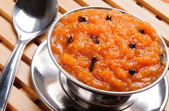

Receita doce de abóbora

Ingredientes:
- 1 kg de abóbora sem casca, e cortada em pedaços médios
- 2 xícara de chá de açúcar
- 1 canela em pau
- 3 cravos da índia
- Coco ralado fresco ou seco a gosto
Modo de preparo:
- Em uma panela grande colocar a abóbora, o açúcar, a canela e os cravos.
- Levar para cozinhar em fogo brando com a panela tampada.
- Mexa sempre e amasse com uma colher de pau para desmanchar a abóbora. Quando ela estiver bem cozida, retire a canela e os cravos, e junte o coco.
- Deixe apurar mais um pouco e desligue o fogo.
- O doce não pode ficar seco, tem que ficar bem úmido.